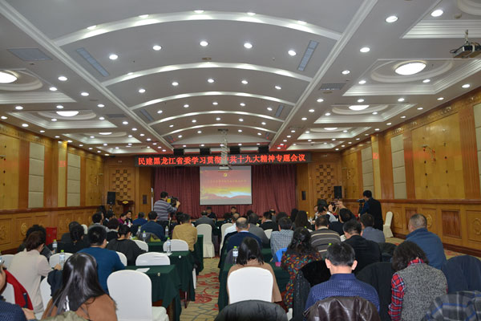

民建黑龙江省委召开 学习贯彻中共十九大精神专题会议
作者：杜晓琳 信息来源：民建中央网站 时间：2017-06-29 分享到：

11月12日上午，民建黑龙江省委学习贯彻中共十九大精神专题会议在哈尔滨市召开。省政府副省长、民建省委主委孙东生主持会议，中共省委十九大精神宣讲团成员、东北农业大学副校长苑芳江教授做了学习贯彻中共十九精神专题辅导报告。
中共十九大是以习近平同志为核心的党中央团结带领全国各族人民阔步迈进新时代的历史盛会，对于在新的历史起点上决胜全面建成小康社会、坚持和发展中国特色社会主义、实现中华民族伟大复兴的中国梦，具有重大的现实意义和深远的历史意义。苑芳江从深刻领会十九大“不忘初心、牢记使命，为实现中华民族伟大复兴中国梦不懈奋斗”的大会主题；深刻领会习近平新时代中国特色社会主义思想的丰富内涵；深刻领会十八大以来党和国家发生的历史性变革；深刻领会中国特色社会主义进入新时代在中华民族、世界民族和人类社会发展史上具有的重大意义；深刻领会我国社会主要矛盾发生的变化；深刻领会“两个一百年”的奋斗目标；深刻领会我国经济社会发展的重大战略部署；深刻领会坚定不移全面从严治党，不断提高党的执政能力和领导水平等八个方面做了全面翔实的解读，与会同志上了一堂生动的十九大精神辅导课。